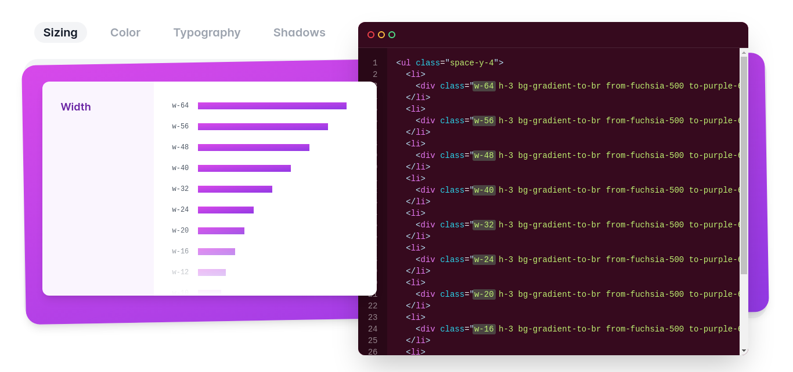
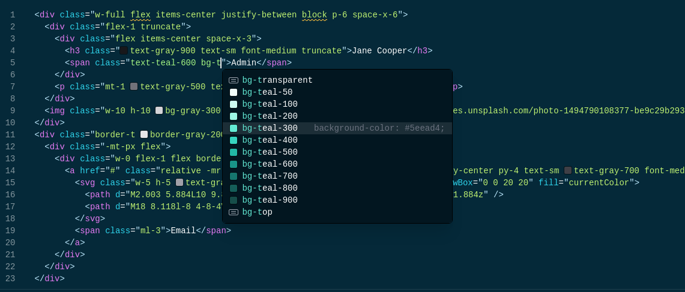

Czym jest Tailwind CSS?
- framework do tworzenia frontendu
- niedający nam gotowych komponentów
- będący swego rodzaju "nakładka" na CSS
- posiadający spore możliwości do customizacji
Przykład


Bootstrap vs Tailwind vs CSS
Bootstrap
- pakiet przygotowanych komponentów, które da się do pewnego stopnia konfigurować
- trochę klas pomocniczych, np. do paddingu
- grid system
- niektóre komponenty dostarczane razem z JS
- nie mamy aż takiej kontroli nad elementami
- dobry do szybkich/małych projektów, gdzie nie zależy nam aż tak na wyglądzie
CSS
- piszemy wszystko od zera
- mamy pełną kontrolę nad tym, co piszemy
- przydałoby się w jakiś sposób nasze klasy ustandaryzować
- trzeba pamiętać o RWD
Tailwind
- jest kompromisem między CSS, a np. Bootstrapem
- mamy praktycznie pełną kontrolę nad tym, co piszemy
- ustandaryzowane jednostki, w których się poruszamy
- obsługa stanów czy RWD w jednym miejscu
- całość to w pewnym sensie klasy pomocnicze, z których budujemy nasze komponenty
W skrócie
- wszystko się dzieje w html i w pliku konfiguracyjnym
- nie dostarcza nam gotowych komponentów, a jedynie klasy pomocnicze
- jest swego rodzają "nakładką" na CSS, którą da się w pełni customizować.
- posiada ustandaryzowane jednostki i wartości, które oczywiście da się customizować
- w bardzo prosty sposób pozwala pisać RWD czy obsługę różnych stanów, które również da się customizować
Pewien "narzucony" standard
Pełna kontrola nad tym, co piszemy


Obsługa stanów

RWD


Wsparcie dla IDE
Personalizacja

I wiele więcej
- resetuje style w przeglądarkach
- JIT compiler + purge
- dark mode
- wspiera praktycznie wszystkie nowości CSS
- ...
Tailwind UI

Dziękuję za uwagę
Adrian Hopek, 39574